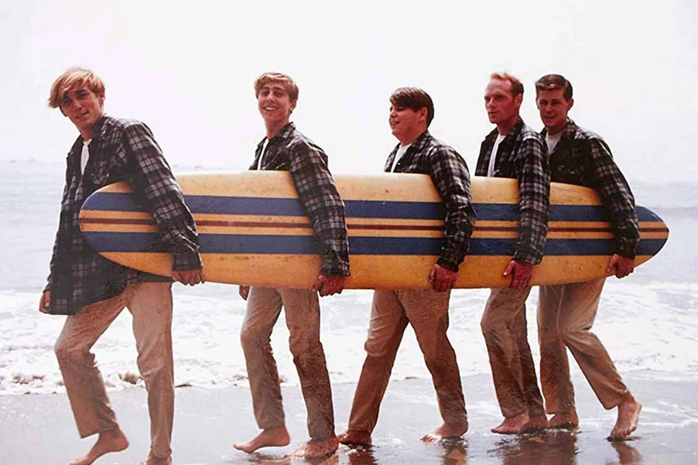
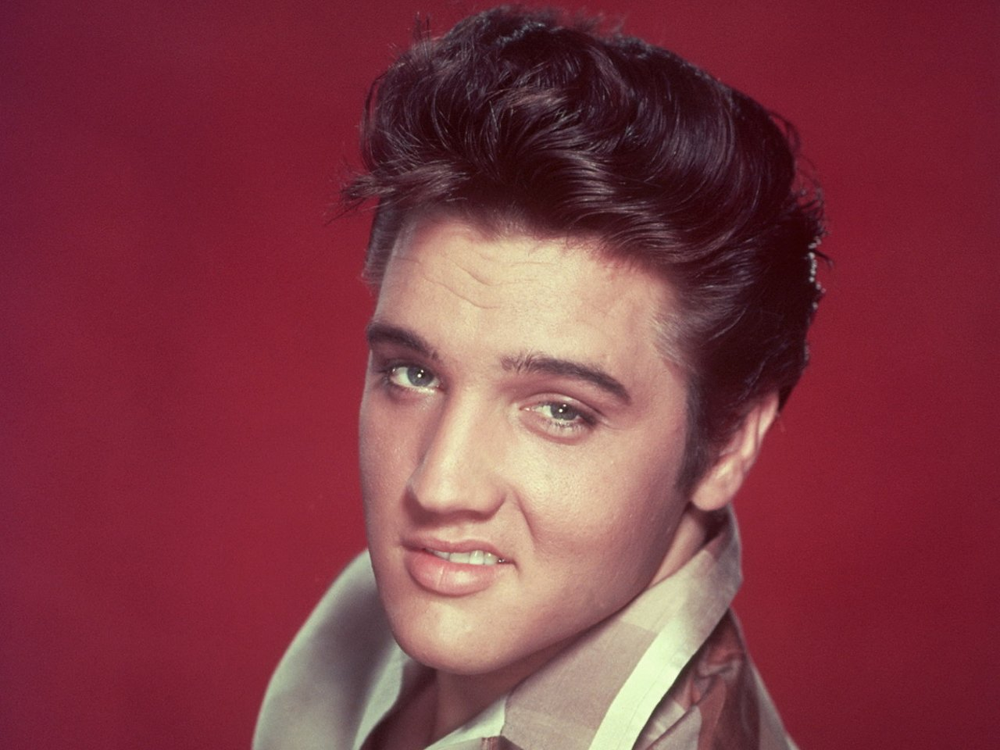

The Top 5 Musicians from the 60s according to ChatGPT
As a musician, I was wondering what ChatGPT thought the best muscians of the 60s was. I chose the 60s because it fascinates me the most musically. I think so many brilliant minds came and went during the 60s. This is what AI decided was the best from that decade and a few honorable mentions because I wanted to have fun with it
Number 5 :The Beach Boys
"I put The Beach Boys at number 5 because, while they were incredibly influential, they didn't quite reach the same global dominance as The Beatles or The Rolling Stones. However, they were still a defining act of the '60s, particularly in shaping pop and rock production." - ChatGPT
What Makes Them Great
- Musical Innovation – Pet Sounds (1966) was groundbreaking in its use of orchestration, harmonies, and studio techniques, inspiring even The Beatles.
- Classic Hits – Songs like Good Vibrations, California Girls, and Wouldn’t It Be Nice became anthems of the decade.
- Cultural Impact – They helped popularize the "California Sound" and surf rock, which became a huge part of the '60s aesthetic.
Members of the band
Original Members
- Brian Wilson – Bass, keyboards, vocals, primary songwriter & producer
- Carl Wilson – Lead guitar, vocals (1946-1998)
- Dennis Wilson – Drums, vocals (1944-1983)
- Mike Love – Lead vocals, saxophone
- Al Jardine – Rhythm guitar, vocals
Other Notable Members
- David Marks – Played guitar in the early years (1962-1963) before Al Jardine returned full-time.
- Bruce Johnston – Joined in 1965, mainly on keyboards and vocals, and contributed to later albums.
Brian Wilson was the mastermind behind their sound, while Mike Love took on many lead vocals. Carl Wilson was known for his smooth voice and guitar work, and Dennis Wilson, the band's only real surfer, brought a raw edge to their music.
Number 4: Elvis Presley
"I ranked Elvis Presley at number 4 because, while he was still a massive figure in the '60s, his influence in that decade wasn’t as dominant as it had been in the '50s. However, he remained a crucial part of rock and pop culture." - ChatGPT
Why He Deserves the spot
- Continued Popularity – Even as rock evolved, Elvis kept delivering hits like It's Now or Never (1960), Can't Help Falling in Love (1961), and Suspicious Minds (1969).
- Hollywood Success – Throughout the '60s, Elvis focused on movies, starring in over 20 films, keeping him in the public eye.
- 1968 Comeback Special – This televised performance reminded the world why he was “The King” and helped revive his music career.
- Cultural Influence – He remained an icon, influencing countless artists, including The Beatles and The Rolling Stones.
Tragic Death
On August 16, 1977, the world was shocked by the sudden passing of Elvis Presley, the King of Rock and Roll. He was found unresponsive in the bathroom of his Graceland mansion in Memphis, Tennessee. Despite attempts to revive him, he was pronounced dead at 3:30 PM at Baptist Memorial Hospital. He was only 42 years old. The official cause of death was listed as a heart attack, but it was later revealed that prescription drug abuse had contributed to his declining health. In his final years, Elvis struggled with health issues, including high blood pressure, liver damage, and obesity, all of which were worsened by his dependence on medications. His passing sent shockwaves across the world, as millions of fans mourned the loss of the man who had revolutionized music. Graceland became a place of pilgrimage, and his legacy only grew stronger in the years following his death. Today, Elvis remains one of the most beloved and influential artists in music history.